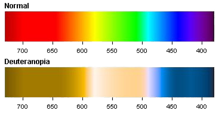

|
La deuteranopia es cuando no existen los conos verdes, responsables de las frecuencias
medias en el espectro de luz visual. Generalmente, este tipo se agrupa con la Deuteranomalía, que es cuando los conos verdes no faltan, pero son defectuosos, así que las personas con el tipo de daltonismo que afecta a los conos verdes, a los que se les refiere como deutanes, pueden tener distintos grados de gravedad del daltonismo. |
 |
Al observar el espectro cromático de una persona deuteranópica, se puede observar que diversos colores se ven diferentes a los del espectro cromático normal. Si bien el rojo y el verde son los principales colores problemáticos, también hay, por ejemplo, grises, morados y un azul verdoso que no se distinguen bien.
La deuteranopia, y especialmente la deuteranomalía, son los casos más observados de todas las deficiencias de la visión del color. En el 75 % de los casos de daltonismo, se trata de un defecto causado por los conos sensibles al verde. La siguiente lista muestra las tasas aproximadas de defectos de deuteranía en nuestra población:
| Género | Deuteranopia | Deuteranomalía |
| Masculino | 1% | 5% |
| Femenino | 0.1% | 0.35% |
Lea sobre los demás tipos de daltonismo:
Protanopia, Deuteranopia y Monocromatismo.